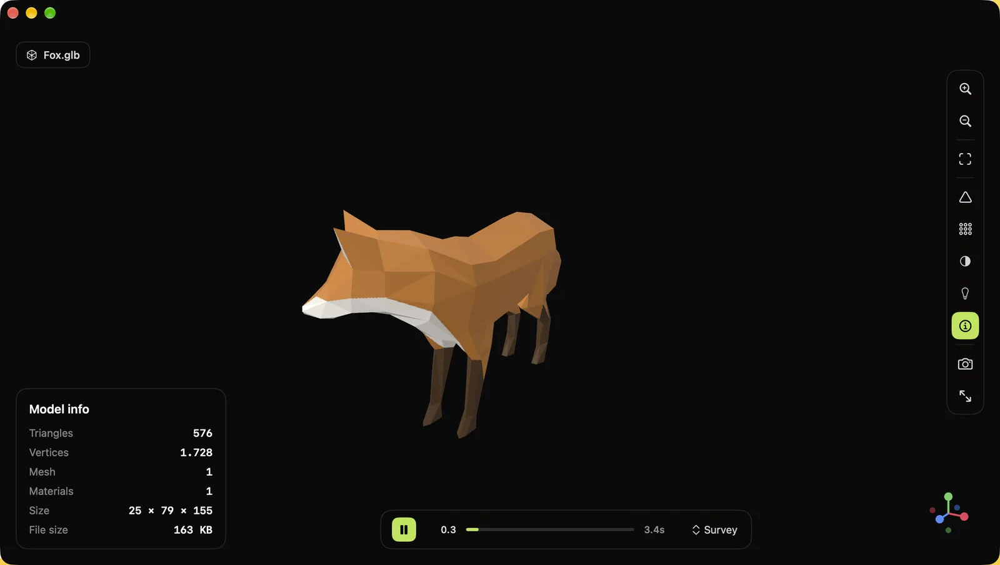

Peek3D
Drop a 3D file. Look at it.
A free, open-source native macOS viewer for glTF, FBX, OBJ, USD, STL and more. No editing, no export, no account — just the model, fast.
brew install --cask deeeemiss/tap/peek3d
Signed and notarized by Apple · macOS 13 or later · Apple silicon and Intel · MIT licensed

Opens the files you actually have
glTF and FBX through dedicated loaders, everything else through Apple's Model I/O — all rendered natively with SceneKit.
- GLB
- GLTF
- FBX
- OBJ
- USDZ
- USD
- USDA
- USDC
- STL
- DAE
- PLY
- ABC
Everything you need to inspect a model
Built for the moment you just want to see what's inside a file.
Drag, drop, done
Drop a file on the window or the Dock icon, double-click it in Finder, or reopen it from Recents. Orbit, pan, zoom, and fit to view.
Shading modes
The file's own materials, or normals, matcap, unlit and a UV checker — plus a wireframe overlay that works in every mode.
Lighting presets
Default, Studio, Outdoor and Dark mood, built entirely in code. Switch in one click to see how a model reads.
Animations
Plays skinned glTF and FBX animations with a timeline, play/pause and clip selection. Wireframe stays correct while it plays.
Model info
Triangles, vertices, meshes, materials, real-world size and file size, at a glance. Take a PNG screenshot of the view.
Truly native
SwiftUI and SceneKit, native window tabs, a real Settings window, and 11 languages including Arabic, Japanese, Korean and Chinese.
Your files stay on your Mac
Peek3D makes no network connections and collects no data. It runs sandboxed and can read only the files you open. The whole source code is public.
Install
Three ways, pick the one you like.
Homebrew
brew install --cask deeeemiss/tap/peek3dDownload
Get the DMG from GitHub Releases and drag Peek3D into Applications. Signed and notarized: no Gatekeeper warnings.
Build from source
git clone https://github.com/deeeemiss/Peek3D.git
cd Peek3D
./scripts/run.shQuestions
Is Peek3D really free?
Yes. It's open source under the MIT license: no trial, no subscription, no in-app purchases.
Can it edit or convert models?
No, on purpose. Peek3D is a viewer — it opens files quickly and shows them accurately. For editing, use Blender, Reality Composer or your DCC tool of choice.
Why use it instead of Quick Look?
Quick Look covers USDZ and a few other formats. Peek3D also opens glTF/GLB and FBX, plays their animations, and adds shading modes, lighting presets, wireframe and model statistics.
Does it collect any data?
No. The app has no network access at all.
Which Macs does it run on?
Any Mac with macOS 13 Ventura or later, Apple silicon or Intel.